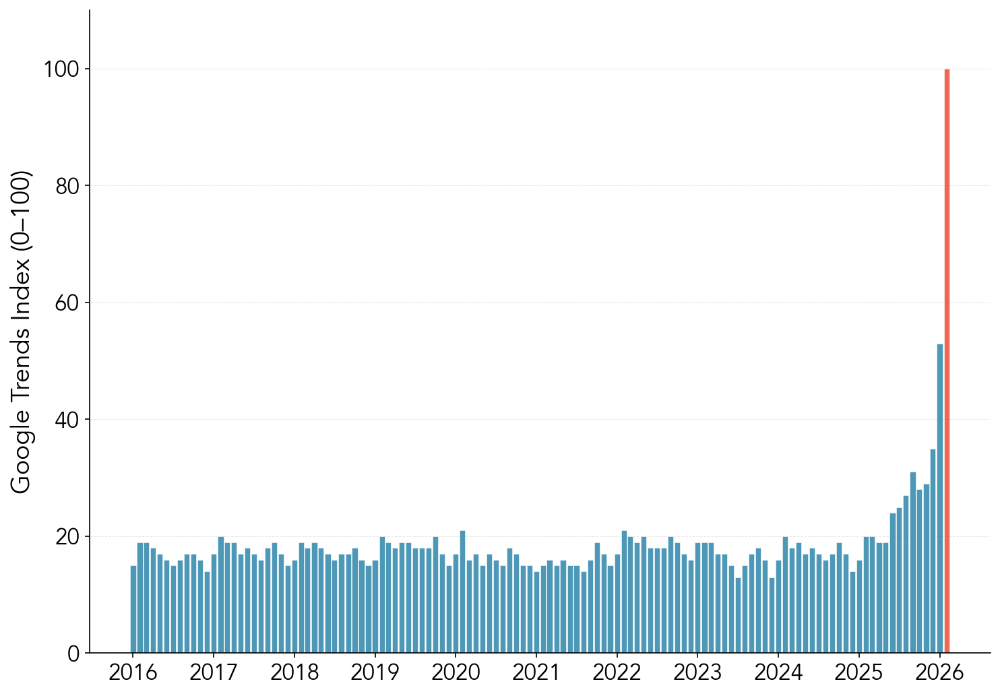
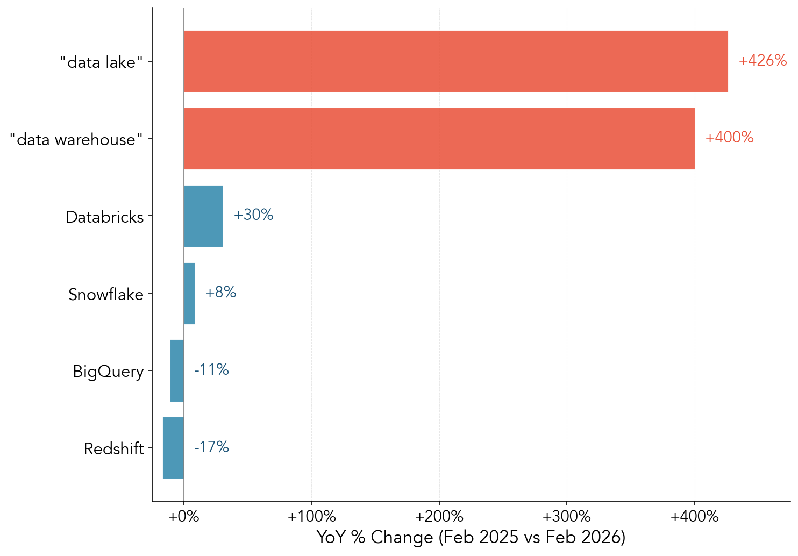

“Data warehouse” hits all-time high on Google Trends
Google Trends: “data warehouse” (US, monthly)

“Data lake” shows the same pattern. But vendor-specific searches aren’t keeping up.
YoY change: category vs. vendor searches (Feb 2025 vs. Feb 2026)

Key Takeaways
- Google searches for “data warehouse” hit an all-time high in Feb 2026, up +400% YoY — “data lake” is up +426%
- Vendor searches lag far behind: Snowflake (+8%), Databricks (+30%), while BigQuery (-11%) and Redshift (-17%) are down
- The gap between category and vendor interest suggests early education — new entrants exploring the concept before shopping for products
- AI agents that demand high-quality, unified data may be driving this new wave of interest in data infrastructure
Methodology
Google Trends, monthly, US only, Jan 2016 – Feb 2026. Generic terms (“data warehouse”, “data lake”) use raw search term data, each on its own 0–100 scale. Vendor terms (Snowflake, Databricks, BigQuery, Redshift) use topic MIDs on a shared comparable scale. YoY compares Feb 2025 vs Feb 2026. Data pulled March 2, 2026.